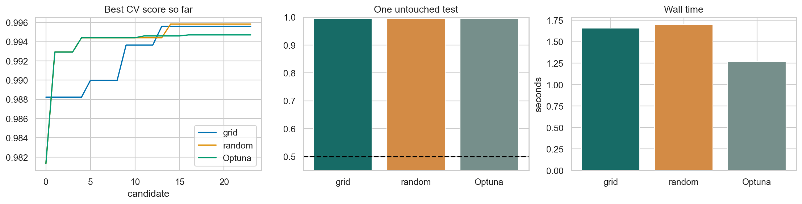

ML Hands-on Lab · 10 — Practice and diagnosis
Grid, random, and Optuna search
1. The decision and the mechanism
A search algorithm decides which model settings deserve your next experiment. Compare search strategies using the same data, folds, parameter ranges, and trial budget; then judge each selected model on data the search never saw.
This lesson includes the mechanism, a hand-worked example, and the experiment design. The paired notebook contains the complete runnable setup and produces the diagnostic figure below.
2. Work a small example
An RBF SVM has two especially consequential settings: C controls the penalty for margin violations, and gamma controls how locally each example influences the boundary. Grid search chooses combinations in advance. Random search samples combinations independently. The Optuna study here uses a Tree-structured Parzen Estimator (TPE): after its initial trials, it favors regions associated with better observed scores.
A budget is part of the comparison
Suppose C has six candidate values and gamma has four. A complete grid needs 6 × 4 = 24 candidates. With three folds, that is 72 fitted models before the final refit. Giving random search or Optuna 100 trials would compare both strategy and compute. This notebook gives each method 24 candidates on the same three folds. A five-point grid over each axis would instead need 25 candidates; under a five-trial limit it cannot be complete.
3. The mathematics, with meanings
\[\hat\lambda=\arg\max_{\lambda\in\Lambda_B}\frac{1}{K}\sum_{k=1}^{K}\mathrm{AUC}_{k}(\lambda)\]
λ is one setting pair; ΛB is the set of B tried pairs. Each fold fits on its training portion and scores a held-out portion. Their mean is evidence about the candidate, with sampling noise. The maximum is also a selection operation: as B grows, there are more chances to select a lucky score. A high best-CV value is not an unbiased estimate of the winner’s future performance.
Sampling uniformly in log space gives equal attention to multiplicative ranges: C from 0.01 to 0.1 occupies as much probability as C from 100 to 1,000. Linear-uniform sampling would spend most trials among the largest values.
4. Follow the actual experiment
- Load the breast-cancer feature dataset and lock away a stratified 20% test set. Its labels play no role in search.
- Put StandardScaler and SVC in one pipeline. Every CV fold learns scaling from its own training rows, then transforms its validation rows with those fitted statistics.
- Use a shared shuffled StratifiedKFold with three folds. The grid contains 6 × 4 settings; random search and the seeded TPE study each try 24.
- Record best CV score so far and elapsed time. Equal candidate counts do not guarantee equal time because expensive hyperparameters can change training cost.
- Refit each search winner on all development rows. Report its final test AUC separately from the CV score. Do not use those test scores to launch another round of tuning.
5. Controls worth changing
| Control | What changing it does | What to inspect |
|---|---|---|
| C: 0.01–1,000 | Small C permits more margin violations; very large C can fit small irregularities. | Both the winning score and how sensitive nearby candidates are. |
| gamma: 0.0001–10 | Small gamma gives broad influence; large gamma can create isolated decision regions. | A high-C, high-gamma candidate may memorize without transferring. |
| Trial budget: 24 | More trials explore more choices and create more selection opportunities. | Best-CV curve, elapsed time, and the separate final test score. |
| CV folds: 3 | More folds change bias, noise, and computation; keep them identical across methods. | Whether a tiny apparent gain is stable across folds and seeds. |
6. Read the result and its limits
The first panel is a best-so-far CV curve: it can only rise because worse candidates do not erase the incumbent. A faster rise means better use of this sequence of trials, not universal superiority. Compare the final-test bars and time bars alongside it. ROC AUC 0.5 is random ranking; a small lead on one small test set is weak evidence of a general winner. No particular search method is guaranteed to win.

The data is small and the space has only two dimensions. Results do not establish that a search method scales better to neural architecture or large distributed training. Search settings and search order are themselves choices; changing them after viewing test results consumes the holdout.
7. Code that exposes the mechanism
The excerpt below follows the notebook’s actual setup. X_dev and y_dev are the development split; the complete notebook loads and splits the data. The pipeline is what prevents preprocessing leakage inside CV.
from scipy.stats import loguniform
from sklearn.model_selection import StratifiedKFold, RandomizedSearchCV
from sklearn.pipeline import make_pipeline
from sklearn.preprocessing import StandardScaler
from sklearn.svm import SVC
cv = StratifiedKFold(3, shuffle=True, random_state=0)
pipe = make_pipeline(StandardScaler(), SVC(kernel="rbf", random_state=0))
search = RandomizedSearchCV(
pipe,
{"svc__C": loguniform(1e-2, 1e3),
"svc__gamma": loguniform(1e-4, 10)},
n_iter=24, scoring="roc_auc", cv=cv, random_state=0, n_jobs=1,
)
search.fit(X_dev, y_dev)
# Scaling is fitted again inside each fold, then on all development rows.
winner = search.best_estimator_
print(search.best_params_, search.best_score_)Optuna evaluates the same score for settings proposed by trial.suggest_float(..., log=True). Its objective returns the mean of cross_val_score; the final estimator is refitted separately with the selected values.
8. Break an assumption
The notebook draws 250 unrelated random score vectors and computes each vector’s AUC against the same labels. Selecting their maximum can produce an impressive-looking number despite there being no learned signal. This is a direct illustration of selection among noisy statistics; it is not a simulation of full cross-validation or a trained model.
- Repeat the three searches with several seeds while keeping the test set sealed until the comparison protocol is fixed. Track how often the apparent leader changes.
- Cut the trial budget to six. Which method reaches useful regions first, and how sensitive is that answer to random order?
- If you need an estimate of the whole tuning procedure, put search inside an outer CV loop. Inner folds select; outer folds assess the selected procedure.
9. When to use it and what comes next
Use this design when choosing settings under a real experiment budget. Random search is a defensible baseline; more adaptive machinery must earn its complexity. For tiny differences on small datasets, spend effort on the split design, feature availability, and uncertainty before spending hundreds of extra trials.